3 cyclic quadrilaterals are formed (ALHM, LHBK, HMCK)
By considering the area of triangle, AK × BC = BM × AC = CL × AB (altitude × base always equal to each other)
The orthocenter and vertex can inter-exchange.
e.g. the orthocenter of ΔABC is H, while
The orthocenter of ΔABH is C
The orthocenter of ΔACH is B
The orthocenter of ΔBCH is A
Coordinates of Orthocenter
Can be found by joining simultaneous equations of two altitudes. Keep an eye on horizontal lines and vertical lines.
Perpendicular Bisector and Circumcenter
Special Lines and Centers — Perpendicular Bisector and Circumcenter
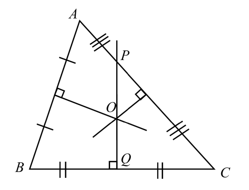
Perpendicular bisector PQ of ΔABC; O is the circumcenter.
PQ is the perpendicular bisector of ΔABC. O is the circumcenter of ΔABC.
In right-angled triangle, BROQ is a rectangle. As well as the perpendicular bisector of AC does not pass through B unless AB = BC.
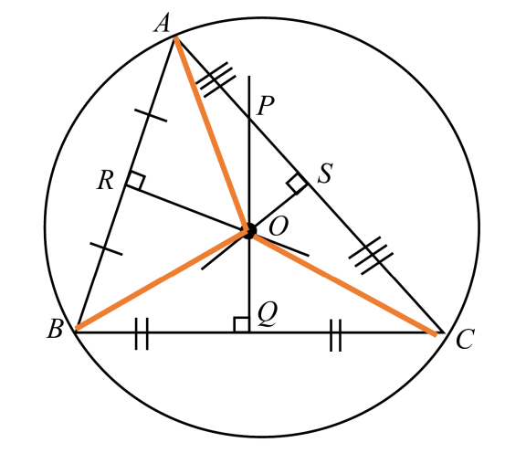
Acute-angled triangle: circumcenter O inside, circumcircle through A, B, C.
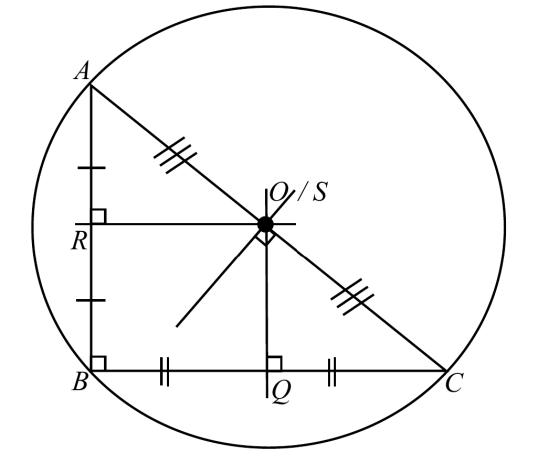
Obtuse-angled triangle: circumcenter O outside.
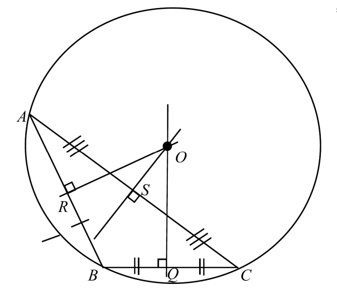
Right-angled triangle: circumcenter O at midpoint of hypotenuse.
Features
Perpendicular Bisector Property + Converse of Perpendicular Bisector Property
A circumscribed circle is formed, passing through points A, B and C with center O. The circle passing through obtuse-angled triangle is the largest given same perimeter.
OA = OB = OC (radii). All the vertices are equidistant from the circumcenter. Note that in scalene triangle, OQ, OR and OS are unequal!
3 pairs of congruent triangles are formed: ΔARO and ΔBRO; ΔASO and ΔCSO; ΔBQO and ΔCQO
The circumcenter of ΔABC, O is also the orthocenter of ΔRSQ.
Perpendicular Bisector Property
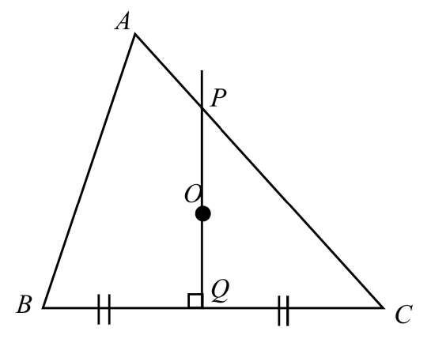
Perpendicular Bisector Property: PQ bisects BC perpendicularly.
If PQ is a perpendicular bisector of BC, then any points on PQ can form isosceles sides with BC. e.g. PB = PC and OB = OC.
Converse of Perpendicular Bisector Property
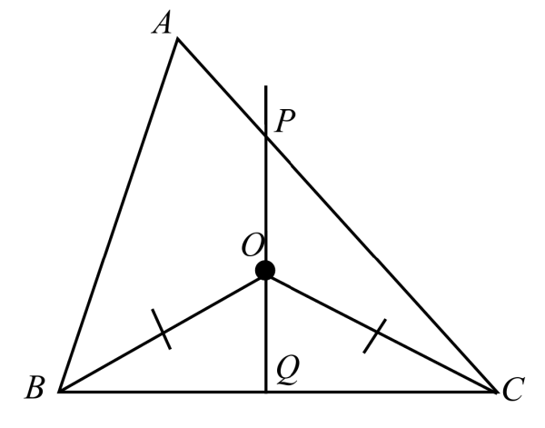
Converse: OB = OC and BQ = QC ⇒ OQ ⊥ BC.
OB = OC and BQ = QC → OQ ⊥ BC
OB = OC and OQ ⊥ BC → BQ = QC
Coordinates of Circumcenter
Can be found by:
Setting equations on equal circumradii (more preferred)
Joining simultaneous equations of two perpendiculars
Keep an eye on horizontal lines and vertical lines.
Angle Bisector and Incenter
Special Lines and Centers — Angle Bisector and Incenter
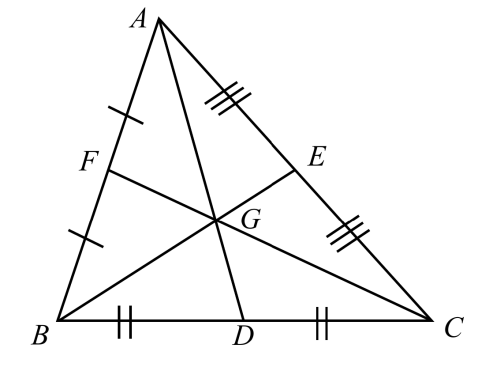
Angle bisector AM of ΔABC; I is the incenter.
AM is the angle bisector of ΔABC. I is the incenter of ΔABC.
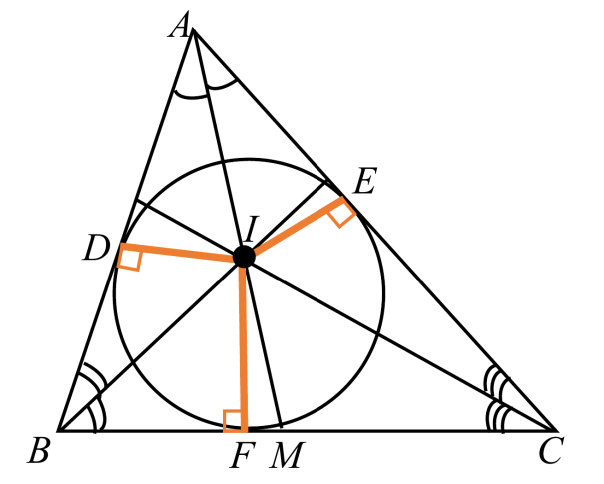
Acute-angled triangle: incenter I and incircle.
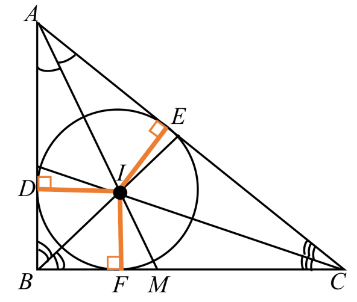
Obtuse-angled triangle: incenter I and incircle.
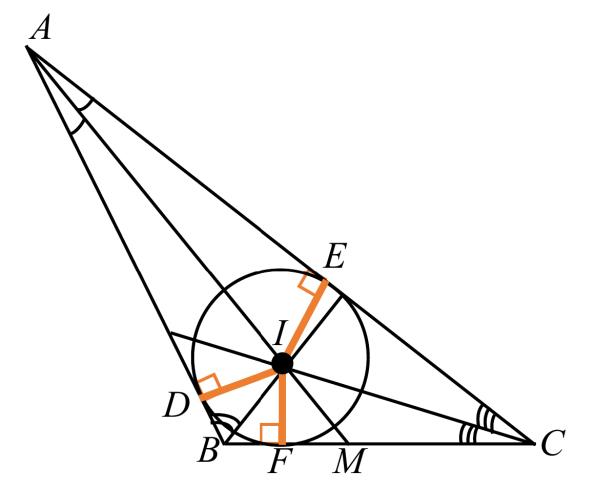
Right-angled triangle: incenter I and incircle.
Features
Angle Bisector Property + Converse of Angle Bisector Property
An inscribed circle is formed, passing through points D, E and F with center I. The circle passing through acute-angled triangle is the largest given same perimeter.
DI = EI = FI (radii), all the perpendiculars are equidistant from the incenter. Note that in scalene triangle, AI, BI and CI are unequal.
pr = 2A
3 pairs of congruent triangles are formed: ΔADI and ΔAEI; ΔBDI and ΔBFI; ΔCEI and ΔCFI
From (5): AD = AE, BD = BF, CE = CF
Angle Bisector Theorem: BM/MC = AB/AC, similarly for other two pairs
Coordinates of incenter: ((ax_a + bx_b + cx_c)/(a + b + c), (ay_a + by_b + cy_c)/(a + b + c))
Angle Bisector Property
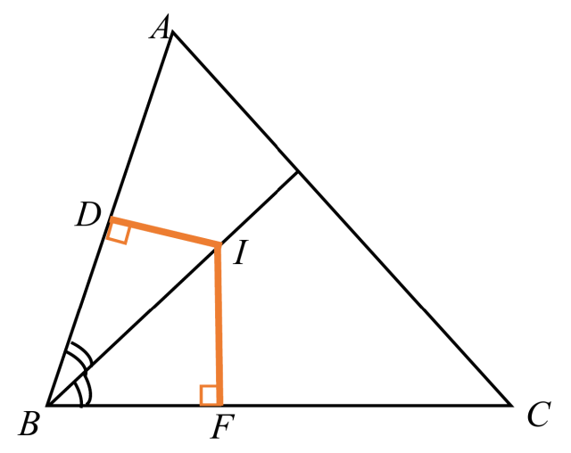
Angle Bisector Property: DI = IF.
If BI is an angle bisector of ABC with AB ⊥ DI and BC ⊥ IF, then DI = IF.
Converse of Angle Bisector Property
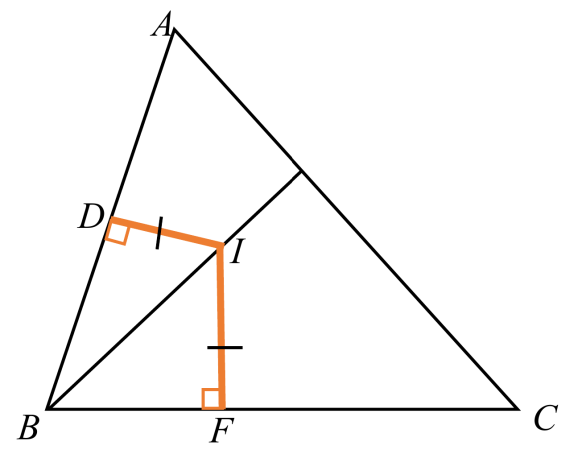
Converse: DI = IF ⇒ BI is the angle bisector.
If DI = IF with AB ⊥ DI and BC ⊥ IF, then BI is an angle bisector of ABC. Please note that I can be any points lying on the angle bisector.
Coordinates of Incenter
Can be found by:
Make use of pr = 2A
Setting up equations related to inclinations
Joining simultaneous equations of two angle bisectors when there are horizontal/vertical lines
Other Features
Euler's line
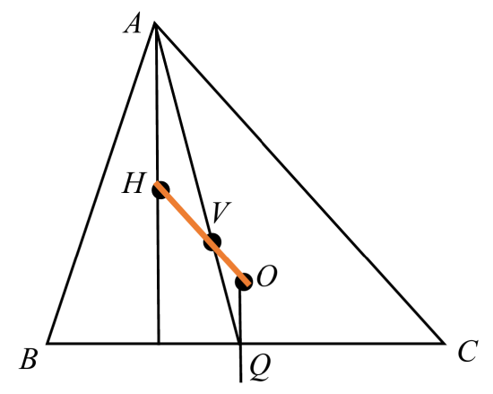
Euler's line: circumcenter O, centroid V, orthocenter H lie on the same line.
For all triangles, the circumcenter O, the centroid V and the orthocenter H lie on the same line which is known as the Euler's line.
Isosceles triangle
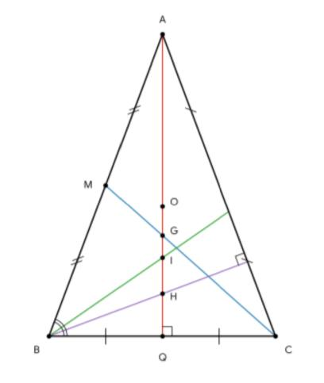
Isosceles triangle: all four centers lie on AQ.
For isosceles triangles, the angle bisector of BAC (AQ) acts as all 4 special lines and hence all 4 centers lie on AQ (the axis of symmetry).
(Given that AB = AC, O, G, I, H are the circumcenter, centroid, incenter, orthocenter respectively)
Equilateral triangle
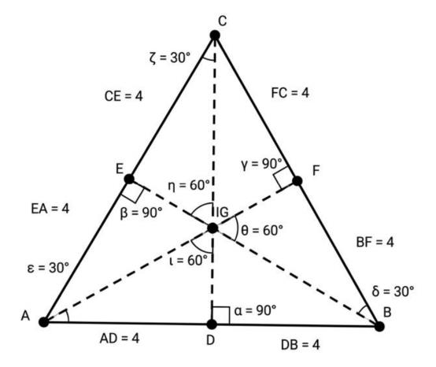
Equilateral triangle: all four centers coincide at G.
For equilateral triangles, the 4 centers coincide at the same point.
(G is the circumcenter, centroid, incenter, orthocenter)